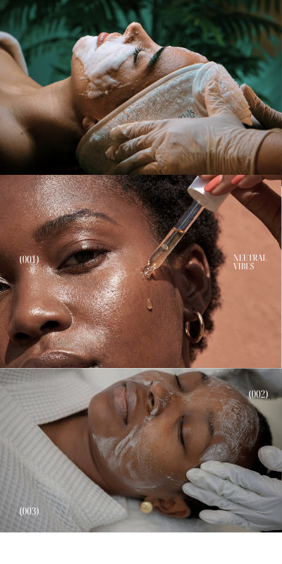

About Majesty Senerity Spa
At Majesty Senerity Spa, we are committed to providing our clients with an exceptional spa experience. Our team of skilled therapists and wellness experts are dedicated to helping you relax, rejuvenate, and achieve a sense of balance in your life.
Our spa offers a wide range of treatments, including massages, facials, body treatments, and more. We use only the highest quality products and techniques to ensure that every visit is a memorable one.
We believe that self-care is essential for overall well-being, and we strive to create a serene and welcoming environment where you can escape the stresses of everyday life. Whether you're looking for a quick pick-me-up or a full day of pampering, Majesty Senerity Spa is here to help you feel your best.
We invite you to explore our services and discover the many ways we can help you achieve relaxation and wellness. Thank you for choosing Majesty Senerity Spa, and we look forward to serving you.
Our Mission
Our mission is to provide a sanctuary of relaxation and rejuvenation, where clients can escape the demands of daily life and focus on their well-being. We are committed to delivering personalized care and exceptional service, ensuring that each visit exceeds expectations.
We strive to create a welcoming and tranquil environment that promotes physical, mental, and emotional wellness. Our goal is to empower our clients to prioritize self-care and embrace a lifestyle of balance and harmony.
Our Vision
Our vision is to be recognized as a leading spa destination, known for our commitment to excellence, innovation, and client satisfaction. We aim to continuously evolve and expand our offerings, staying at the forefront of the wellness industry.
We envision a future where Majesty Senerity Spa is synonymous with relaxation, rejuvenation, and holistic well-being. We aspire to create a lasting impact on our clients' lives, helping them achieve a state of serenity and fulfillment.
Our Values
At Majesty Senerity Spa, we are guided by a set of core values that shape our approach to client care and business practices. These values reflect our commitment to excellence, integrity, and compassion in all that we do.
Our Founder
Majesty Senerity Spa was founded by Mufhatutshedzwa Manavhela, a passionate wellness advocate with a vision to create a sanctuary of relaxation and rejuvenation. With years of experience in the wellness industry, Mufhatutshedzwa has dedicated their career to helping clients achieve balance and well-being through personalized care and exceptional service.
Mufhatutshedzwa is committed to continuous learning and professional development, staying up-to-date with the latest trends and techniques in the wellness industry. Their dedication to excellence and client satisfaction is reflected in the exceptional services and treatments offered at Majesty Senerity Spa.
We invite our clients to learn more about our founder and their vision for Majesty Senerity Spa. At Majesty Senerity Spa, we are proud to carry forward the legacy of our founder and to provide an exceptional spa experience that promotes relaxation, rejuvenation, and overall well-being.
Our Team
Our team of skilled therapists and wellness experts are passionate about helping clients achieve relaxation and well-being. Each member of our team is trained in various techniques and treatments, ensuring that every visit is tailored to the individual needs of our clients.
We believe in continuous learning and professional development, and our team regularly participates in workshops and training sessions to stay up-to-date with the latest trends and techniques in the wellness industry. Our commitment to excellence and client satisfaction is reflected in the dedication and expertise of our team members.
We invite you to meet our team and experience the exceptional care and service that they provide. At Majesty Senerity Spa, our team is here to help you relax, rejuvenate, and achieve a sense of balance in your life.
Our Facilities
Our spa facilities are designed to create a serene and welcoming environment where clients can escape the stresses of everyday life. We have created a space that promotes relaxation, rejuvenation, and overall well-being.
Our facilities include private treatment rooms, a relaxation lounge, and state-of-the-art equipment and amenities. We have carefully curated our space to ensure that every detail contributes to a calming and peaceful atmosphere.
We invite you to explore our facilities and experience the tranquility and comfort that we have created for our clients. At Majesty Senerity Spa, we are committed to providing an exceptional spa experience that promotes relaxation, rejuvenation, and overall well-being.
Our Commitment to Sustainability
At Majesty Senerity Spa, we are committed to operating in an environmentally responsible manner. We implement sustainable practices throughout our operations, from the products we use to the way we manage our resources. Our goal is to minimize our environmental impact while providing the highest quality services to our clients.
We prioritize the use of eco-friendly products and materials, and we strive to reduce waste and conserve energy wherever possible. Our commitment to sustainability is an integral part of our mission to promote overall well-being and create a positive impact on our community and the environment.
We invite our clients to join us in our commitment to sustainability and to make conscious choices that support a healthier planet. Together, we can create a more sustainable future while enjoying the benefits of relaxation and rejuvenation at Majesty Senerity Spa.
Our Community Involvement
At Majesty Senerity Spa, we are committed to giving back to our community and fostering positive relationships with our clients and partners. We actively participate in local events and initiatives that promote health, wellness, and environmental responsibility.
We believe in supporting local businesses and organizations, and we strive to create meaningful connections with our community. Our goal is to make a positive impact on the lives of those around us and to contribute to the overall well-being of our community.
We invite our clients to join us in our community involvement efforts and to participate in initiatives that promote health, wellness, and sustainability. Together, we can create a stronger, healthier, and more connected community.
We hope that you have enjoyed learning more about Majesty Senerity Spa and our commitment to providing an exceptional spa experience. We invite you to explore our services, meet our team, and discover the many ways we can help you achieve relaxation and well-being. Thank you for choosing Majesty Senerity Spa, and we look forward to welcoming you soon.